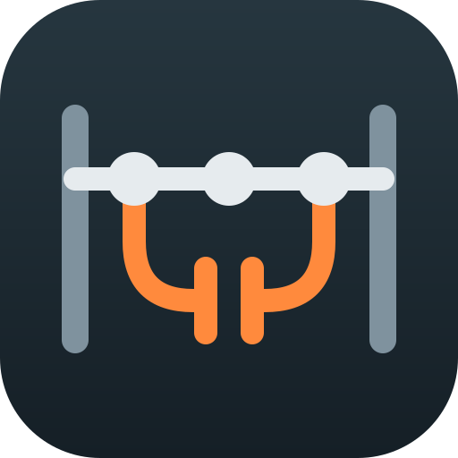

SPS-Git nutzbarGit und GitHub für SPS-Programme aus TIA Portal: exportieren, Änderungen lesbar vergleichen, committen, pushen und einen alten Stand zurück ins Projekt holen.
- Diff als Logik (
#Freigabe := …) statt SimaticML-XML - Abgleich: Projekt und Ordner Element für Element gegenüberstellen
- Einrichtungsassistent: Git, Repository, TIA-Projekt, erster Export und GitHub Schritt für Schritt
- Installieren über den SPS-Agent, Updates direkt aus dem Programm